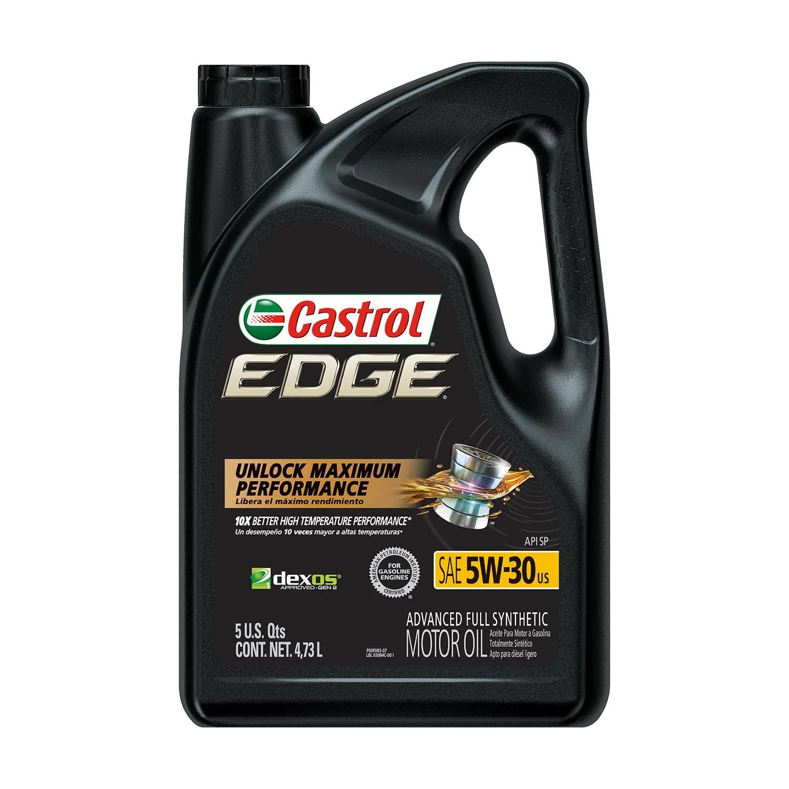
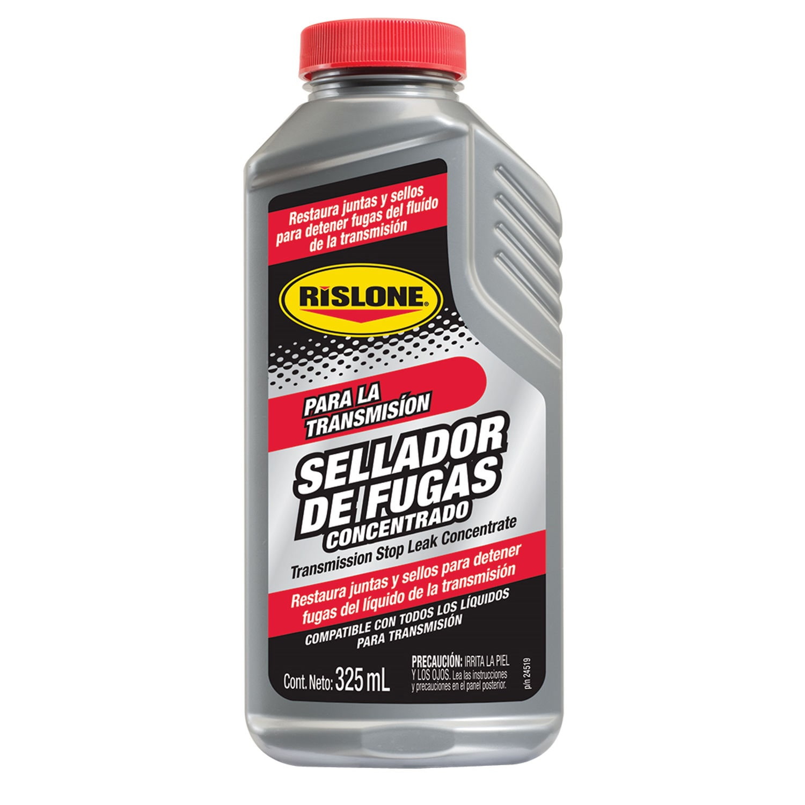
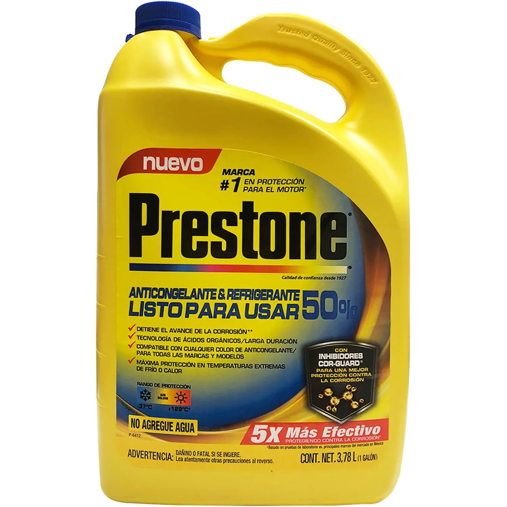

| Imagen |
Descripción / Modelo |
Precio |
 |
Garrafa de Aceite Super Mobil multigrado mineral, Grado de Viscosidad 15W-40
uso para motor, piezas disponibles 789
|
$ 710.00.- |
|  |
Castrol Aceite de Motor Sintetico, Disminuye la formación de depósitos en el motor para ayudar a maximizar su respuesta
Reduce el contacto de metal con metal a través de una gama de diferentes velocidades de conducción, composision sintetica
peso de 3 kilos piezas disponibles 450
|
$ 1,565.00.- |
 |
AutoZone Liquido para Transmision Automatica Multivehiculo 1 Cuarto, peso de 2 kilos,
color de liquido rojo, piezas disponibles 350
|
$ 170.00.- |
|  |
Rislone Aditivo y sellador para transmisión de 325 ml, El sellador de fugas de aceite de transmisión concentrado de Rislone está especialmente
diseñado para detener las fugas de sellos y empaques causadas por el desgaste normal del motor y el envejecimiento.
tipo de contenedor botella, piezas disponibles 456
|
$ 100.00.- |
|  |
Prestone Larga Duracion 50% Universal Anticongelante. l Anticongelante & Refrigerante Prestone® Cor-Guard® es un producto PREMIUM
ideal para mantener la temperatura correcta del motor, recomendado para usar TODO EL AñO ya que previene los problemas de sobrecalentamiento,
corrosión y oxidación en radiador, bombas de agua y todas las partes del sistema de enfriamiento, causados por usar agua o anticongelantes de baja calidad
piezas disponibles 700
|
$ 260.00.- |
 |
Formula 1 Cera Liquida de Carnauba de 16oz (473ml), Dele a la pintura de su auto protección y brillo por más tiempo con la cera de carnauba Formula 1. Formula 1 usa cera de carnauba brasileña #1
la cera natural más dura del mundo, que da brillo y protege hasta por 12 meses. Piezas disponibles 145
|
$ 95.00.- |
 |
Hi-Gear Enjuage de Motor 887ml. El compromiso de Hi-Gear de proporcionar solo productos de la más alta calidad
se ejemplifica en su oferta de aditivos de rendimiento, líquidos y tratamientos. Piezas disponibles 245
|
$ 134.50.- |
 |
Dupli-Color Pintura para ruedas color grafito, 11 oz,Personalice o adorne las ruedas desgastadas con el recubrimiento para ruedas Dupli-Color®
La fórmula avanzada de este esmalte acrílico probado en las pistas, restaura la apariencia original de las ruedas y protege contra polvo de los frenos,
químicos, solventes de limpieza, calor y desportillamiento. Piezas disponibles 400
|
$ 215.50.- |